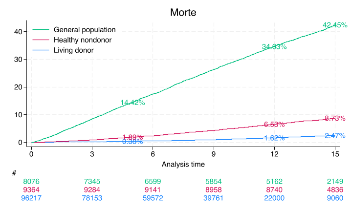

Now Lets Get Down to Technical Stuff#
Let’s start by reproducing some old results
Old results#
Source population#
Extract vector-matrix#
Show code cell source
qui {
capture log close
log using jamascript.log, replace
global repo https://github.com/muzaale/forum/raw/main/
/*--Edit this Line --*/
global dir ~/documents/liveserver/age/
// cls; some commands don't work outside Stata!!
/*noi di "What is your work directory?" _request(workdir)
if "$workdir" == "" {
di as err "Please provide your work directory"
exit
}
else {
cd $workdir
noi di "jamascript is running ..."
}
*/
use ${repo}esrdRisk_t02tT, clear
tab donor rSMGJcEdF_d
g entry = rSMGJcEdF_t0
//linkage for donors after 2011 is untrustworthy
replace rSMGJcEdF_d=0 if rSMGJcEdF_tT > d(31dec2011)
replace rSMGJcEdF_tT = d(31dec2011) if rSMGJcEdF_tT > d(31dec2011)
//linkage before 1994 is untrustworthy
#delimit ;
replace entry = d(01jan1994) if
entry < d(01jan1994) &
rSMGJcEdF_tT > d(01jan1994);
stset rSMGJcEdF_tT,
origin(rSMGJcEdF_t0)
entry(`entry')
fail(rSMGJcEdF_d==2)
scale(365.25);
#delimit cr
sts list, fail by(donor) at(5 12 15) saving(km, replace )
preserve
use km, clear
replace failure=failure*100
sum failure if donor==1 & time==5
local don5y: di %3.2f r(mean)
sum failure if donor==1 & time==12
local don12y: di %3.2f r(mean)
sum failure if donor==1 & time==15
local don15y: di %3.2f r(mean)
//
sum failure if donor==2 & time==5
local hnd5y: di %3.2f r(mean)
sum failure if donor==2 & time==12
local hnd12y: di %3.2f r(mean)
sum failure if donor==2 & time==15
local hnd15y: di %3.2f r(mean)
//
sum failure if donor==3 & time==5
local gpop5y: di %3.2f r(mean)
sum failure if donor==3 & time==12
local gpop12y: di %3.2f r(mean)
sum failure if donor==3 & time==15
local gpop15y: di %3.2f r(mean)
restore
#delimit ;
sts graph,
by(donor)
fail
per(100)
xlab(0(3)15)
ylab(0(10)40,
format(%2.0f))
tmax(15)
risktable(, color(stc1) group (1)
order(3 " " 2 " " 1 " ")
ti("#")
)
risktable(, color(stc2) group(2))
risktable(, color(stc3) group(3))
legend(on
ring(0)
pos(11)
order(3 2 1)
lab(3 "General population")
lab(2 "Healthy nondonor")
lab(1 "Living donor")
)
ti("Morte")
text(`don5y' 5 "`don5y'%", col(stc1))
text(`don12y' 12 "`don12y'%", col(stc1))
text(`don15y' 15 "`don15y'%", col(stc1))
text(`hnd5y' 5 "`hnd5y'%", col(stc2))
text(`hnd12y' 12 "`hnd12y'%", col(stc2))
text(`hnd15y' 15 "`hnd15y'%", col(stc2))
text(`gpop5y' 5 "`gpop5y'%", col(stc3))
text(`gpop12y' 12 "`gpop12y'%", col(stc3))
text(`gpop15y' 15 "`gpop15y'%", col(stc3));
#delimit cr
graph export ${dir}jamascript.png, replace
keep _* entry age_t0 female race donor
rename age_t0 age
//dataset
save ${dir}jamascript.dta, replace
noi stcox i.donor, basesurv(s0)
noi list s0 _t donor in 1/10
matrix define b=e(b)
keep s0 _t
//s0
sort _t s0
list in 1/10
save ${dir}s0.dta, replace
export delimited using ${dir}s0.csv, replace
matrix beta = e(b)
svmat beta
keep beta*
drop if missing(beta1)
//betas
list
save b.dta, replace
export delimited using ${dir}b.csv, replace
log close
//noi ls
}
Show code cell output
Failure _d: rSMGJcEdF_d==2
Analysis time _t: (rSMGJcEdF_tT-origin)/365.25
Origin: time rSMGJcEdF_t0
Iteration 0: Log likelihood = -54332.522
Iteration 1: Log likelihood = -52993.14
Iteration 2: Log likelihood = -51472.516
Iteration 3: Log likelihood = -49543.907
Iteration 4: Log likelihood = -49520.68
Iteration 5: Log likelihood = -49520.548
Iteration 6: Log likelihood = -49520.548
Refining estimates:
Iteration 0: Log likelihood = -49520.548
Cox regression with Breslow method for ties
No. of subjects = 113,657 Number of obs = 113,657
No. of failures = 4,937
Time at risk = 999,633.484
LR chi2(2) = 9623.95
Log likelihood = -49520.548 Prob > chi2 = 0.0000
-------------------------------------------------------------------------------
_t | Haz. ratio Std. err. z P>|z| [95% conf. interval]
--------------+----------------------------------------------------------------
donor |
HealthyNon~r | 4.341779 .2130915 29.92 0.000 3.943586 4.780178
NotSoHealt~r | 26.88098 1.007964 87.78 0.000 24.97625 28.93096
-------------------------------------------------------------------------------
+-------------------------------+
| s0 _t donor |
|-------------------------------|
1. | .98566928 11.277207 Donor |
2. | .99256749 6.8281999 Donor |
3. | .99351642 6.1711157 Donor |
4. | .99402483 5.6919918 Donor |
5. | .98475171 11.816564 Donor |
|-------------------------------|
6. | .99934972 .90622861 Donor |
7. | .98705221 10.472279 Donor |
8. | .9879412 9.8754278 Donor |
9. | .98766713 10.064339 Donor |
10. | .99994059 .08761123 Donor |
+-------------------------------+
#

use ${repo}esrdRisk_t02tT, clear
tab donor rSMGJcEdF_d
g entry = rSMGJcEdF_t0
//linkage for donors after 2011 is untrustworthy
replace rSMGJcEdF_d=0 if rSMGJcEdF_tT > d(31dec2011)
replace rSMGJcEdF_tT = d(31dec2011) if rSMGJcEdF_tT > d(31dec2011)
//linkage before 1994 is untrustworthy
#delimit ;
replace entry = d(01jan1994) if
entry < d(01jan1994) &
rSMGJcEdF_tT > d(01jan1994);
stset rSMGJcEdF_tT,
origin(rSMGJcEdF_t0)
entry(`entry')
fail(rSMGJcEdF_d==2)
scale(365.25);
#delimit cr
(Live Kidney Donors + NHANES III Nondonors, Unmatched time_tT + CMS)
| rSMGJcEdF_d
donor | Censored ESRD Died | Total
---------------------+---------------------------------+----------
Donor | 95,184 99 934 | 96,217
HealthyNondonor | 8,570 17 777 | 9,364
NotSoHealthyNondonor | 4,694 154 3,228 | 8,076
---------------------+---------------------------------+----------
Total | 108,448 270 4,939 | 113,657
(2 real changes made)
(95,132 real changes made)
(14,748 real changes made)
Survival-time data settings
Failure event: rSMGJcEdF_d==2
Observed time interval: (origin, rSMGJcEdF_tT]
Exit on or before: failure
Time for analysis: (time-origin)/365.25
Origin: time rSMGJcEdF_t0
--------------------------------------------------------------------------
113,657 total observations
0 exclusions
--------------------------------------------------------------------------
113,657 observations remaining, representing
4,937 failures in single-record/single-failure data
999,633.48 total analysis time at risk and under observation
At risk from t = 0
Earliest observed entry t = 0
Last observed exit t = 18.18207
tab donor, nolab
donor | Freq. Percent Cum.
------------+-----------------------------------
1 | 96,217 84.66 84.66
2 | 9,364 8.24 92.89
3 | 8,076 7.11 100.00
------------+-----------------------------------
Total | 113,657 100.00
stcox i.donor if inlist(donor,1,2)
Failure _d: rSMGJcEdF_d==2
Analysis time _t: (rSMGJcEdF_tT-origin)/365.25
Origin: time rSMGJcEdF_t0
Iteration 0: Log likelihood = -18528.127
Iteration 1: Log likelihood = -18236.065
Iteration 2: Log likelihood = -18188.769
Iteration 3: Log likelihood = -18188.762
Refining estimates:
Iteration 0: Log likelihood = -18188.762
Cox regression with Breslow method for ties
No. of subjects = 105,581 Number of obs = 105,581
No. of failures = 1,709
Time at risk = 905,937.446
LR chi2(1) = 678.73
Log likelihood = -18188.762 Prob > chi2 = 0.0000
-------------------------------------------------------------------------------
_t | Haz. ratio Std. err. z P>|z| [95% conf. interval]
--------------+----------------------------------------------------------------
donor |
HealthyNon~r | 3.932226 .1970064 27.33 0.000 3.564453 4.337945
-------------------------------------------------------------------------------
ds
pers_id don_smoke creat rSMGJcEdF_d entry
don_id don_bmi don_related rSMGJcEdF_t0 _st
don_yearcat don_bmicat n2e_d rSMGJcEdF_tT _d
don_age don_bp_p~yst n2e_t rSMGJcEdF_t _origin
don_agecat don_sbpcat donor rSMGJcEdF_x _t
don_female don_bp_p~ast healthy age_t0 _t0
don_race_e~n don_dbpcat acr age_tT
don_educat don_egfr case female
don_hyperten don_egfrcat id race
stcox i.donor if inlist(donor,1,2)
Failure _d: rSMGJcEdF_d==2
Analysis time _t: (rSMGJcEdF_tT-origin)/365.25
Origin: time rSMGJcEdF_t0
Iteration 0: Log likelihood = -18528.127
Iteration 1: Log likelihood = -18236.065
Iteration 2: Log likelihood = -18188.769
Iteration 3: Log likelihood = -18188.762
Refining estimates:
Iteration 0: Log likelihood = -18188.762
Cox regression with Breslow method for ties
No. of subjects = 105,581 Number of obs = 105,581
No. of failures = 1,709
Time at risk = 905,937.446
LR chi2(1) = 678.73
Log likelihood = -18188.762 Prob > chi2 = 0.0000
-------------------------------------------------------------------------------
_t | Haz. ratio Std. err. z P>|z| [95% conf. interval]
--------------+----------------------------------------------------------------
donor |
HealthyNon~r | 3.932226 .1970064 27.33 0.000 3.564453 4.337945
-------------------------------------------------------------------------------
stcox i.donor don_age don_female i.don_race i.don_educat don_hyperten don_smoke don_bmi don_bp_preop_syst don_egfr if inlist(donor,1,2), basesurv(s0_v1)
Failure _d: rSMGJcEdF_d==2
Analysis time _t: (rSMGJcEdF_tT-origin)/365.25
Origin: time rSMGJcEdF_t0
Iteration 0: Log likelihood = -7369.9489
Iteration 1: Log likelihood = -6797.8396
Iteration 2: Log likelihood = -6587.7124
Iteration 3: Log likelihood = -6550.0726
Iteration 4: Log likelihood = -6549.9168
Iteration 5: Log likelihood = -6549.9168
Refining estimates:
Iteration 0: Log likelihood = -6549.9168
Cox regression with Breslow method for ties
No. of subjects = 40,407 Number of obs = 40,407
No. of failures = 789
Time at risk = 229,660.14
LR chi2(13) = 1640.06
Log likelihood = -6549.9168 Prob > chi2 = 0.0000
-------------------------------------------------------------------------------
_t | Haz. ratio Std. err. z P>|z| [95% conf. interval]
--------------+----------------------------------------------------------------
donor |
HealthyNon~r | 2.551067 .394816 6.05 0.000 1.883587 3.45508
don_age | 1.078138 .0035652 22.75 0.000 1.071173 1.085148
don_female | .6891149 .0540845 -4.74 0.000 .5908618 .8037064
|
don_race_ethn |
Black | 1.338166 .1222157 3.19 0.001 1.118843 1.600482
Hispanic | .8493195 .0849092 -1.63 0.102 .6981901 1.033162
|
don_educat |
AttendedCo~e | .8096594 .085284 -2.00 0.045 .6586317 .9953185
CollegeGra~e | .4857873 .0819362 -4.28 0.000 .3490411 .6761073
PostCollege | .4831805 .0894342 -3.93 0.000 .336168 .6944843
|
don_hyperten | .2835048 .2854837 -1.25 0.211 .0393929 2.040344
don_smoke | 1.561325 .1249769 5.57 0.000 1.334623 1.826535
don_bmi | .9706489 .0082164 -3.52 0.000 .9546779 .9868871
don_bp_pr~yst | 1.011765 .0020861 5.67 0.000 1.007685 1.015862
don_egfr | 1.011178 .0030357 3.70 0.000 1.005246 1.017146
-------------------------------------------------------------------------------
di c(pwd)
di c(k)
di c(N)
di "${dir}"
/Users/apollo/Documents/LiveServer/age
43
113657
~/documents/liveserver/age/
export delimited _t s0_v1 using "~/documents/liveserver/age/s0_v1.csv", replace
file /Users/apollo/documents/liveserver/age/s0_v1.csv saved
list _t s0_v1
+-----------------------+
| _t s0_v1 |
|-----------------------|
1. | 11.277207 . |
2. | 6.8281999 . |
3. | 6.1711157 .99989248 |
4. | 5.6919918 .99989966 |
5. | 11.816564 . |
|-----------------------|
6. | .90622861 .9999904 |
7. | 10.472279 .99973797 |
8. | 9.8754278 .99976002 |
9. | 10.064339 .99975273 |
10. | .08761123 .99999835 |
|-----------------------|
11. | .08487337 .99999835 |
12. | .08487337 .99999835 |
13. | .08487337 .99999835 |
14. | .08761123 .99999835 |
15. | .08487337 . |
|-----------------------|
16. | .08761123 .99999835 |
17. | .08487337 .99999835 |
18. | .08487337 .99999835 |
19. | .08761123 .99999835 |
20. | .08761123 .99999835 |
|-----------------------|
21. | .08761123 .99999835 |
22. | .08761123 .99999835 |
23. | .08487337 .99999835 |
24. | .08761123 .99999835 |
25. | .08761123 . |
|-----------------------|
26. | .08487337 .99999835 |
27. | .08761123 .99999835 |
28. | .08761123 .99999835 |
29. | .08487337 .99999835 |
30. | .08487337 .99999835 |
|-----------------------|
31. | .08761123 .99999835 |
32. | .08487337 .99999835 |
33. | .08761123 .99999835 |
34. | .08761123 .99999835 |
35. | .09034908 .99999835 |
|-----------------------|
36. | .10403833 .99999835 |
37. | .08761123 .99999835 |
38. | .08761123 .99999835 |
39. | .08761123 .99999835 |
40. | .09034908 .99999835 |
|-----------------------|
41. | .08761123 .99999835 |
42. | .08487337 .99999835 |
43. | .08761123 .99999835 |
44. | .08487337 .99999835 |
45. | .09034908 . |
|-----------------------|
46. | .10403833 .99999835 |
47. | .09034908 .99999835 |
48. | .10403833 .99999835 |
49. | .08487337 .99999835 |
50. | .08761123 .99999835 |
|-----------------------|
51. | .09034908 .99999835 |
52. | .08761123 .99999835 |
53. | .08487337 .99999835 |
54. | .08487337 . |
55. | .09034908 .99999835 |
|-----------------------|
56. | .10403833 .99999835 |
57. | .09856263 .99999835 |
58. | .08761123 . |
59. | .10403833 .99999835 |
60. | .08761123 .99999835 |
|-----------------------|
61. | .10951403 .99999835 |
62. | .09034908 .99999835 |
63. | .08487337 .99999835 |
64. | .10951403 .99999835 |
65. | .08761123 .99999835 |
|-----------------------|
66. | .08487337 .99999835 |
67. | .10677618 .99999835 |
68. | .10403833 .99999835 |
69. | .11772758 .99999835 |
70. | .08487337 .99999835 |
|-----------------------|
71. | .10677618 .99999835 |
72. | .09034908 .99999835 |
73. | .10403833 .99999835 |
74. | .10951403 .99999835 |
75. | .10951403 .99999835 |
|-----------------------|
76. | .10951403 .99999835 |
77. | .10677618 .99999835 |
78. | .11772758 .99999835 |
79. | .10951403 . |
80. | .11772758 .99999835 |
|-----------------------|
--more--
tab donor if !missing(s0_v1)
donor | Freq. Percent Cum.
---------------------+-----------------------------------
Donor | 31,786 78.66 78.66
HealthyNondonor | 8,621 21.34 100.00
---------------------+-----------------------------------
Total | 40,407 100.00
To create a CSV of the coefficient vector in Stata, you’ll need to extract the matrix and then export it to a CSV file. Here’s how you can do it:
matrix define m=e(b)
matrix list m
di exp(m[1,2])
m[1,16]
1b. 2. 1b.
donor donor don_age don_female don_race_e~n
y1 0 .93651165 .07523544 -.37234725 0
2. 3. 1b. 2. 3.
don_race_e~n don_race_e~n don_educat don_educat don_educat
y1 .2912999 -.16331986 0 -.2111416 -.72198445
4.
don_educat don_hyperten don_smoke don_bmi don_bp_p~yst
y1 -.72736496 -1.2605261 .44553478 -.02979048 .01169634
don_egfr
y1 .01111633
2.5510669
Convert the matrix into a form that can be saved as a CSV. This involves using the svmat command to save the matrix as a variable in a dataset.
capture svmat m
list m*
+------------------------------------------------------------------+
1. | m1 | m2 | m3 | m4 | m5 | m6 | m7 |
| 0 | .9365116 | .0752354 | -.3723472 | 0 | .2912999 | -.1633199 |
|----+-------------------------------------------------+-----------|
| m8 | m9 | m10 | m11 | m12 | m13 |
| 0 | -.2111416 | -.7219844 | -.727365 | -1.260526 | .4455348 |
|------------------------------------------------------------------|
| m14 | m15 | m16 |
| -.0297905 | .0116963 | .0111163 |
+------------------------------------------------------------------+
+------------------------------------------------------------------+
2. | m1 | m2 | m3 | m4 | m5 | m6 | m7 |
| . | . | . | . | . | . | . |
|----+-------------------------------------------------+-----------|
| m8 | m9 | m10 | m11 | m12 | m13 |
| . | . | . | . | . | . |
|------------------------------------------------------------------|
| m14 | m15 | m16 |
| . | . | . |
+------------------------------------------------------------------+
+------------------------------------------------------------------+
3. | m1 | m2 | m3 | m4 | m5 | m6 | m7 |
| . | . | . | . | . | . | . |
|----+-------------------------------------------------+-----------|
| m8 | m9 | m10 | m11 | m12 | m13 |
| . | . | . | . | . | . |
|------------------------------------------------------------------|
| m14 | m15 | m16 |
| . | . | . |
+------------------------------------------------------------------+
+------------------------------------------------------------------+
4. | m1 | m2 | m3 | m4 | m5 | m6 | m7 |
| . | . | . | . | . | . | . |
|----+-------------------------------------------------+-----------|
| m8 | m9 | m10 | m11 | m12 | m13 |
| . | . | . | . | . | . |
|------------------------------------------------------------------|
| m14 | m15 | m16 |
| . | . | . |
+------------------------------------------------------------------+
+------------------------------------------------------------------+
5. | m1 | m2 | m3 | m4 | m5 | m6 | m7 |
| . | . | . | . | . | . | . |
|----+-------------------------------------------------+-----------|
| m8 | m9 | m10 | m11 | m12 | m13 |
| . | . | . | . | . | . |
|------------------------------------------------------------------|
| m14 | m15 | m16 |
| . | . | . |
+------------------------------------------------------------------+
+------------------------------------------------------------------+
6. | m1 | m2 | m3 | m4 | m5 | m6 | m7 |
| . | . | . | . | . | . | . |
|----+-------------------------------------------------+-----------|
| m8 | m9 | m10 | m11 | m12 | m13 |
| . | . | . | . | . | . |
|------------------------------------------------------------------|
| m14 | m15 | m16 |
| . | . | . |
+------------------------------------------------------------------+
+------------------------------------------------------------------+
7. | m1 | m2 | m3 | m4 | m5 | m6 | m7 |
| . | . | . | . | . | . | . |
|----+-------------------------------------------------+-----------|
| m8 | m9 | m10 | m11 | m12 | m13 |
| . | . | . | . | . | . |
|------------------------------------------------------------------|
| m14 | m15 | m16 |
| . | . | . |
+------------------------------------------------------------------+
+------------------------------------------------------------------+
8. | m1 | m2 | m3 | m4 | m5 | m6 | m7 |
| . | . | . | . | . | . | . |
|----+-------------------------------------------------+-----------|
| m8 | m9 | m10 | m11 | m12 | m13 |
| . | . | . | . | . | . |
|------------------------------------------------------------------|
| m14 | m15 | m16 |
| . | . | . |
+------------------------------------------------------------------+
+------------------------------------------------------------------+
9. | m1 | m2 | m3 | m4 | m5 | m6 | m7 |
| . | . | . | . | . | . | . |
|----+-------------------------------------------------+-----------|
| m8 | m9 | m10 | m11 | m12 | m13 |
| . | . | . | . | . | . |
|------------------------------------------------------------------|
| m14 | m15 | m16 |
| . | . | . |
+------------------------------------------------------------------+
--more--
keep m*
Now, you can export this dataset to a CSV file:
drop if missing(m1)
export delimited using "don_nondon_v1.csv", replace
(113,656 observations deleted)
file don_nondon_v1.csv saved